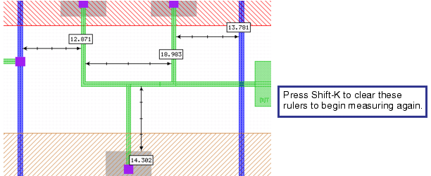

The
easiest way to check feature dimensions in your layout is to measure
them with rulers, which you manually draw directly onto your design
or you can automatically generate rulers for a selected a path or
polygon object. These rulers are not saved with the design. You
can export rulers or take a snapshot of the rulers.
Note: The manual process allows
you to draw multiple rulers if configured in your ruler preferences.
The automatic process only supports drawing rulers for a selected
path or polygon object.
Procedure
If you want to...
|
Do the following:
|
|---|
Manually measure one
or more objects
|
Choose to display
the Rulers Palette.
Set your ruler preferences by choosing .
This displays
the Rulers Palette tab
in the Preferences dialog box.
Set the desired ruler preferences. For example,
you can click the “Allow multiple rulers” check box to enable the ability
to draw multiple rulers.
After setting the ruler preferences, click OK to save your preferences
and close the dialog box.
Click the Ruler button in
the “Layout Viewer Toolbar”.
Note: You
can press “r” to set the edit mode to Ruler.
In the Layout Viewing Area, click the left mouse button to define the starting point
for the ruler.
Move the mouse to the desired end point location of
the ruler and click the left mouse button a second time.
This displays
a ruler showing the distance between the two endpoints and the differences
between the x and y coordinates. The Rulers palette also displays
the distance, in addition to the beginning and ending points.
|
Automatically measure
a selected path or polygon object
|
In the Object Selection toolbar, ensure the Path
or Polygon object is selected.
In
the layout viewer, right‑click on a path or polygon to display a
popup menu and choose .
This creates rulers for the x and y direction
and displays the ruler lengths.
|
Results
You can use one of the following options to clear
multiple ruler measurements.
If you want to...
|
Do the following:
|
|---|
Use the keyboard to clear
all rulers
|
Press Shift-K.
|
Use the keyboard to clear one
ruler at a time
|
Press k.
|
Use the menus to clear
all rulers or one ruler at a time
|
Choose to display
the Rulers tab in the Preferences
dialog box.
In the Clear Rulers section, choose All to clear all rulers or Last to clear rulers one by one.
|
Figure 1. Clearing Multiple Rulers